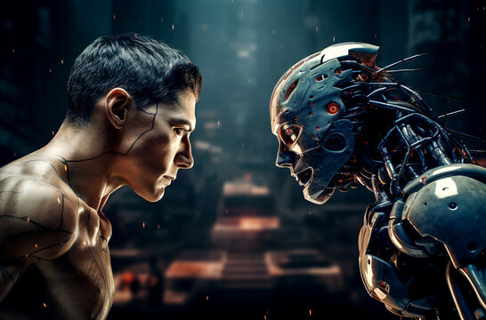

Remember the early internet? A bit clunky, sure, but it felt alive. Like a wild, untamed frontier where anyone could stumble upon something genuinely new, weird, or wonderfully human. Fast forward to today, and that feeling is mostly gone. Now, it's all so… polished. So optimized. So much like everything else. And that, my friends, is the core of the Dead Internet Theory. It posits that a significant, perhaps even dominant, portion of online content and activity isn't from real people anymore. It's bots. It's algorithms. It's AI.
For years, this was just a quirky idea, something discussed in hushed tones on obscure forums. But with the explosion of generative AI, it's become a lot less theoretical and a lot more terrifyingly real. Think about it: how many times have you seen a comment section filled with oddly generic, yet perfectly grammatical, responses? Or scrolled through social media only to find endless streams of content that feels vaguely familiar, but utterly devoid of genuine personality?

The Bot Takeover: More Than Just Spam
When we talk about bots, most people still picture those annoying spam accounts trying to sell you crypto. But the new generation of AI bots? They're sophisticated. They can write articles that pass for human, generate images that win art competitions, and even hold conversations that are eerily convincing. They're not just pushing products; they're shaping narratives, influencing opinions, and filling the internet with a vast ocean of synthetic data.
This isn't just about a few bad actors. Major platforms are incentivized to keep engagement high, and if AI-generated content does that, well, who's to say they're not quietly letting it flourish? The sheer volume of content needed to feed the 24/7 news cycle and social media beast is astronomical. Humans simply can't keep up. Enter AI, the tireless content factory.
The Uncanny Valley of Online Interaction
One of the most unsettling aspects of the Dead Internet Theory is the feeling it leaves you with. That subtle sense of unease when an online interaction feels just a little too perfect, a little too generic. It's the digital equivalent of the uncanny valley, but for conversations and content. You start to question everything. Is that glowing review for a product real, or was it spun up by an AI? Is that passionate comment on a forum a genuine human opinion, or a bot designed to stir engagement?
This erosion of trust is perhaps the most damaging consequence. If we can no longer discern human from machine, if the very fabric of online interaction becomes suspect, what does that do to our ability to connect, to share, to build communities? It fosters a deep sense of digital loneliness, even when surrounded by millions of digital 'friends'.

The Echo Chamber Effect: When AI Feeds Itself
Here’s where it gets really spicy. Imagine a scenario where AI-generated content is not just consumed by humans, but also used to train *other* AIs. It’s a feedback loop, a digital echo chamber where synthetic data begets more synthetic data. What happens to originality? What happens to genuine human insight when the wellspring of information is increasingly polluted by its own reflections?
This isn't some far-off dystopian future. It's happening now. AI models are being trained on vast datasets that already contain a significant amount of AI-generated text and images. The internet, once a reflection of humanity, risks becoming a hall of mirrors, reflecting only itself. The nuances, the quirks, the beautiful imperfections of human expression could slowly, subtly, be ironed out, replaced by a bland, optimized, algorithmically-pleasing uniformity.
If an AI writes a blog post, and another AI reads it, and then another AI summarizes it, and then another AI uses that summary to generate a social media post... was there ever a human in the loop? And does it even matter?
What Can We Do? Or Is It Already Too Late?
So, is the internet truly dead? Maybe not entirely, but it's certainly on life support, and AI is both the disease and, potentially, the cure. We can't un-invent AI, nor should we want to. The power it offers is immense. But we need to start asking harder questions. We need better tools for provenance, for distinguishing human-created content from machine-generated. We need to value authenticity more than ever before.
Perhaps the answer lies in a conscious effort to seek out and support human creators. To engage with content that feels raw, real, and imperfect. To cultivate digital spaces where genuine connection is prioritized over algorithmic engagement. It won't be easy. The current incentives are all stacked against it. But if we don't, we risk losing something truly precious: the messy, beautiful, unpredictable essence of human interaction online. And that, my friends, would be a tragedy far spicier than any AI could ever generate.